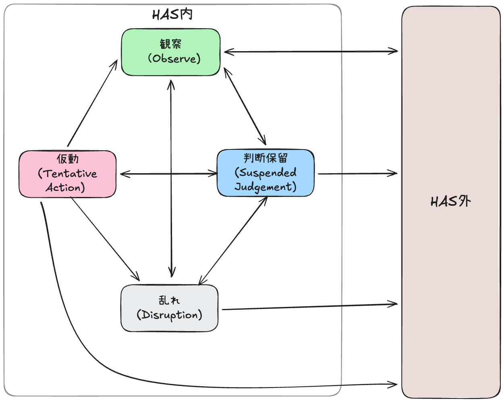

HAS 調律位置マップ
HAS Attunement Map ― 状態の位置を知るための地図 ―
この文書の位置づけ
この文書は、HASを学ぶための段階表ではない。
また、実践の巧拙を評価する基準でもない。
これは、
いま自分がどこにいるかを誤解しないための地図である。
HASにおいて重要なのは、
- 進むことではなく
- うまくやることでもなく
- 選べる余地がなくなったときに、戻れること
この地図は、そのために置かれている。
基本原則
この地図が示すもの
この地図は、状態（位置）のみを示す。
状態間の移動や戻り方（遷移）は、
Patterns および 運用事故カタログ に委ねられている。
これは、位置を知ることと、動くことを分離するためである。

[HAS外]
└─(気づく)──────────────────────────▶ 観察
観察
├─(判断を保留する)──────────────────▶ 判断保留
├─(衝動・不安が増幅)────────────────▶ 乱れ
└─(結論/完遂/介入固定)────────────▶ [HAS外]
判断保留
├─(試しに動く)────────────────────▶ 仮動
├─(戻ると判断)────────────────────▶ 観察
├─(耐えられなくなる)──────────────▶ 乱れ
└─(結論/完遂/介入固定)────────────▶ [HAS外]
仮動
├─(試行を終える)──────────────────▶ 観察
├─(途中で止める)──────────────────▶ 判断保留
├─(制御不能)────────────────────▶ 乱れ
└─(完遂目的化/操作化)────────────▶ [HAS外]
乱れ
├─(戻れると判断)──────────────────▶ 観察
├─(一段階戻る)──────────────────▶ 判断保留
└─(操作・結論化)────────────────▶ [HAS外]
地図の読み方
- ここに示されるのは「段階」ではなく位置である
- 上下・優劣・到達順序は存在しない
- どの位置からでも、観察に戻れる
戻ることは後退ではない。
戻れると判断できた時点で、HASは機能している。
HASが成立する前提条件
位置はすべて以下の前提の上に成り立つ：
- 結論を確定していない（判断を閉じていない）
- 完遂を目的化していない
- 介入を「やるべきこと」として固定していない（操作モードになっていない）
これらの前提が満たされていない場合、その状態は HAS の外にある。
HAS外の兆候（重要）
以下のいずれかが起きている場合、現在の状態は HAS外にある。
- 結果を良くしようとして介入している
- 意味づけ・評価・結論を下している
- 完遂・成功・変化を目標に動いている
- 「正しくやれているか」を気にしている
- 「この方法でいく」と手段を固定している（切り替え不能になっている）
HAS外にいる場合の対応
この場合、状態を特定しようとする前に、 観察に戻る判断そのものが最初の実践となる。
HAS外にいることは、失敗ではない。
気づいた時点で、観察に戻ればよい。
4つの位置（States）
観察（Observation）
すべての実践は、ここから始まり、ここに戻る。
初心者も、経験者も区別されない。 ここは「準備段階」ではなく、正規の位置である。
内部定義
刺激に対して生じつつある身体反応を、
意味づけや感情名を与えずに認知している状態。
判断はまだ立ち上がっていない。
この位置にいる兆候（Signs）
- 身体の緊張や違和感に気づいている
- 衝動が立ち上がりつつあることを認知している
- 介入せず、判断が立ち上がる前に気づけている
- 呼吸が浅くなりすぎていない
観察における Patterns との関係
観察にいるとき、P01–P04 はいずれも実行されない。
それで HAS は成立している。
注意
※HAS外条件: 結論／完遂／介入固定が立ち上がったら HAS外。観察へ戻る。
- 何もしないことは放棄ではない
- 介入しない判断は、責任の放棄ではない
- 観察に留まることは、正規の実践である
判断保留（Suspended Judgment）
この位置の目的は、良くすることではない。
選択の余地が残っている位置に留まるだけである。
内部定義
観察の結果、起きていることや感じていることを、解釈前の“事実”として扱って受け取っているが、
その意味付けや解釈、次の行為に関する判断は宙吊りにされている状態。
選択の余地を奪わないため介入の制限が起きている。
哲学的には、エポケー（判断中止）に相当する状態。
この位置にいる兆候（Signs）
- 介入したい衝動を抑えている
- 状態が整っていないことを「問題化」していない
- 場を進めようとしていない
- 「何もしていない」ことに焦りを感じていない
判断保留における Patterns との関係
判断保留では、P01 が自然に立ち上がることがあるが、
それ以上進まなくてもよい。
注意
※HAS外条件: 結論／完遂／介入固定が立ち上がったら HAS外。観察へ戻る。
- 結果（良くなった／悪くなった）では判定しない
- 自己評価に使わない
- 事後評価も不要
仮動（けどう / Tentative Action）
仮動とは、「一巡を完遂すること」ではない。
進まないという判断を含んだ試行である。
内部定義
仮動（けどう）: 仮に動いてみること。本実行や完遂を目的としない試行的な行為状態。
P01から入り、試行的に動いているが、完遂を目指していない状態。
成果への期待も、評価の対象化もされていない。
この位置にいる兆候（Signs）
- P01 から入り、途中で止まっている
- 状態が変わらないことを失敗と見なしていない
- 「今はここまで」と判断できている
- 完遂への焦りがない
仮動における Pattern との関係
仮動は、P01 から入り、途中で止まることを含む。
P04 に至らなくても失敗ではない。
仮動からの戻り（重要）
仮動から観察へ戻ることは、失敗や乱れを意味しない。
試行を終え、再び気づきの位置に戻るという、正常な遷移である。
注意
※HAS外条件: 結論／完遂／介入固定が立ち上がったら HAS外。観察へ戻る。
- Pattern を道具として切り出さない
- 「P03 だけを使う」という発想を持たない
- 一部だけを「やろう」とした瞬間、断片化が始まる
乱れ（みだれ / Disruption）
HAS は、失敗しない体系ではない。
戻れる体系である。
乱れは、「失敗」ではなく、位置である。
内部定義
主体または場の関係が乱れており、継続が難しい状態。
乱れは、必ず通過すべき関門ではない。
破綻時・失敗時に現れる非常口である。
この位置にいる兆候（Signs）
- 自分または場の関係が乱れている
- 焦りが強い
- 介入衝動が抑えられない
- 沈黙に耐えられない
- 継続が難しいと感じている
乱れからの戻り
この位置から観察または判断保留に戻ることが、
HAS の正常な動作である。
戻る判断ができた時点で、乱れは機能している。
注意
※HAS外条件: 結論／完遂／介入固定が立ち上がったら HAS外。観察へ戻る。
- 乱れを恥じない
- 戻りを正当化する必要はない
- 「いま戻る」と内的に判断すれば十分
遷移の詳細
遷移の方法は、以下を参照：
自己確認の問い
1. まず、HASの中にいるか確認する
以下のいずれかに該当する場合、HAS外にいる：
- 結果を良くしようとしている
- 評価・結論を下している
- 完遂を目指している
- 「正しくやれているか」を気にしている
- 手段を固定している（切り替え不能になっている）
→ 観察に戻る
2. HASの中にいる場合、位置を確認する
いま、私はどこにいるか？
重要な注意
- この問いは、評価のためではない
- 位置を知ることで、次の判断が可能になる
- どの位置にいても、観察に戻れる
慣れ親しむこと（熟練の再定義）
HAS において、目指すのは熟練（Mastery）ではない。 目指すのは、この地図との関係に慣れ親しむこと（Familiarity）である。
慣れ親しんだ者は、
- 迷わず観察に戻れる
- 戻ることを失敗と解釈しない
- 位置を誤解しない
それだけである。
この地図の限界
この地図が示さないもの
- 遷移の方法（どう動くか）
- Patterns の使い方（何をするか）
- 成果の評価（うまくいったか）
これらは、他の文書が担当する。
この地図が示すもの
- 位置の識別（どこにいるか）
- 戻りの正当性（戻っていいか）
- 許可の範囲（やらなくていいこと）
この地図は、動かすための設計書ではない。
迷子にならないための地図である。
関連文書
遷移と循環について
- 全体設計図 — HAS全体の構造
- Patterns P01–P04 — 状態遷移の構造
位置の詳細について
- 判断優先原則 - 優先する判断の基準
- ファシリテーターの落とし穴 - 陥りやすい落とし穴
- 運用事故カタログ —乱れの典型
緊急時の対応
- 緊急停止プロトコル — 緊急停止の手続き
この地図は、進むためのものではない。
選択の余地を狭めずに、居続けるためのものである。
Document Control
- Repo Version: v2.4.4-6-gda7d3832-dirty
- Last Modified: 2025-12-28
- Commit: 4e13389
- Author: Takeshi Kakeda